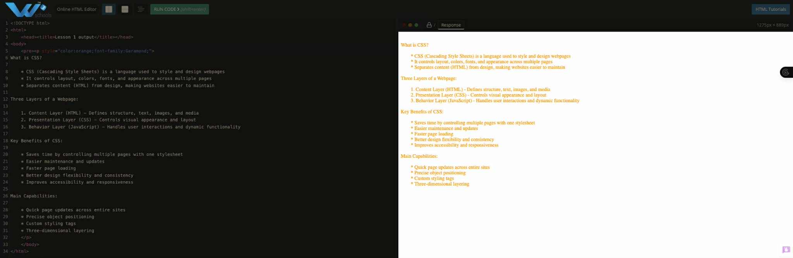
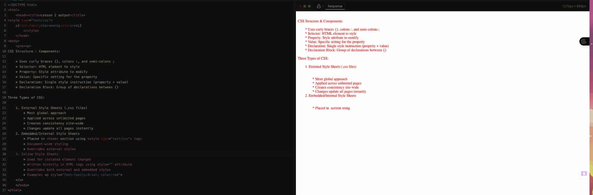
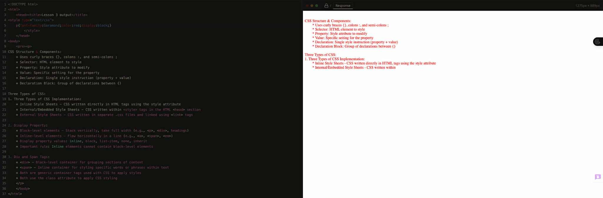
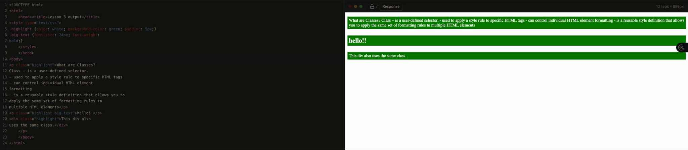
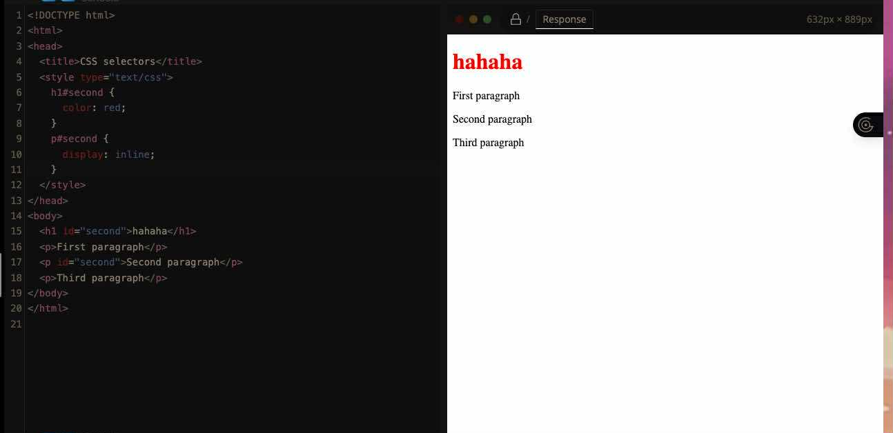
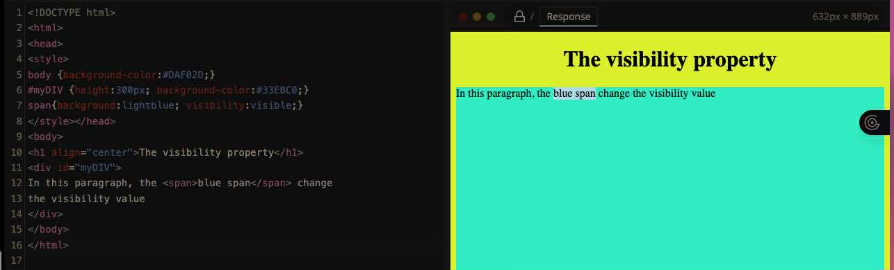

.jpg)
Lesson 1
I found the analogy to the human body really helpful! Just like bones, muscles, and veins layer together, webpages have three distinct layers: Content (HTML - the skeleton/foundation), Presentation (CSS - the appearance/skin), Behavior (JavaScript - the movement/interaction). CSS is specifically the presentation layer, it's all about visual design and layout but it’s not just about making things "pretty"—it also handles accessibility, responsiveness, and user experience. I also learned that the reason we use CSS is so that the content is separated from the design or the stylistic choices of the page, making things easier to maintain and manage.
📸 View Lesson 1 Media
Lesson 2
I discovered there are three main types of CSS, each with different scope and priority. External style sheets are separate .css files that can style multiple web pages simultaneously, making them ideal for maintaining consistent design across an entire website. Embedded or internal style sheets are placed within the head section of an HTML document and apply styles to that specific page only. Inline style sheets target individual elements directly using the style attribute. Importantly, these three types have a hierarchy: inline styles override embedded styles, which in turn override external styles.
📸 View Lesson 2 Media
Lesson 3
I learned about the CSS display property, which controls how elements are laid out on a webpage. Elements can be either block-level or inline-level. Block-level elements like paragraphs and divs stack vertically and take up the full available width, while inline-level elements like links and spans display horizontally in a line. An important rule to remember is that inline elements cannot contain block-level elements. The display property can be set to various values including inline, block, list-item, none, and inherit, each affecting how the element appears on the page.
📸 View Lesson 3 Media
Lesson 4
I learned about CSS classes, which are user-defined selectors that allow for reusable styling across multiple HTML elements. I also learned that classes are identified by a dot notation and come in two forms: generic classes that can be applied to any HTML element, and element-specific classes that target particular HTML tags. This distinction is important because generic classes offer flexibility across different elements, while element-specific classes provide more precise control over styling individual element types.
📸 View Lesson 4 Media
Lesson 5
In this lesson, I learned about CSS selectors, which are essential tools for finding and styling HTML elements on a webpage. CSS selectors are divided into six main types, each serving a specific purpose. The element or tag selector targets all instances of a particular HTML tag, like paragraphs or headings. The ID selector is used for styling unique elements that appear only once on a page, such as headers or footers, and is defined using the "#" symbol. The class selector, though not fully detailed in the content I reviewed, is used for styling multiple elements that share common characteristics. The universal selector, represented by an asterisk (*), applies styles to every single element on the page and is commonly used for resetting margins and padding. The group selector allows multiple different elements to share the same styling rules, which helps reduce code repetition.
📸 View Lesson 5 Media
Lesson 6
Lesson 6 This lesson taught me about two important CSS concepts: dimensions and pseudo-classes. First, I learned how CSS can control the dimensions of HTML elements through various properties. The visibility property can make elements visible, hidden, or collapsed, while width and height properties allow precise control over element sizing. There are also properties for maximum and minimum dimensions, as well as line-height for controlling spacing between lines of text. The second major concept covered was pseudo-classes, particularly for styling hyperlinks. Unlike regular classes that users define themselves, pseudo-classes are predefined and work with specific HTML elements. For anchor elements (links), there are four main pseudo-classes that must be written in a specific order called LVHA: link for unvisited links, visited for links that have been clicked before, hover for when the mouse cursor moves over a link, and active for when a link is being clicked.
📸 View Lesson 6 Media
Events:
Buwan ng Wika
I learned to appreciate my filipino heritage and to be updated about the ongoing events and issues in the philippines. I especially learned to be a better teacher because I had to train the novice debaters on how to talk about philippine social issues, and the basics of debating. I can apply it by being proud of being a filipino, and I can continue teaching both my juniors and people older than me on how to debate to allow their voices to also share the sentiments of the common man. I handled and adjudicated during the ASEAN debate in where I got best adjudicator award. It was really fun to watch people start learning about how to debate, and while yes a lot of people ended up crying, it was okay because we comforted them, and continued on with the debates. I believe I’d teach it by letting them debate first as an exercise then stopping them when they make mistakes, it’s the way I teach people and it seems to work quite well. Buwan ng wika is there to make you appreciate your heritage as a filipino, and realise the depths of our culture. It’s important to have buwan ng wika to allow students like myself to participate in events that we wouldn’t usually participate in just to see because you never know, you might actually like it.
🎞️ View Buwan ng Wika Media


Intrams
I learned the principles of teamwork, working together with my team in tug-of-war and also banding together to support my other classmates like Nina and maeur, or Keisha and Andrew during dancesport. We can apply this in real-life by teaming together and supporting each other in our battles, not just when you win but during the competitions or during the battle to boost their morale and make them perform better. I participated in tug of war where we ended up losing with 2nd place, but even if we did lose I think it’s still a learning curve on how you should communicate with your teammates and support each other. I would try and get them to collaborate with people, and then using that collaboration to overcome a challenge that requires a lot of physical effort so they’d be able to experience near what we did, even without going through the event proper. I think this is especially important because most LPSCI students don’t get enough exercise, myself included because we’re always focusing on academics or other competition so this is a good way to get students to have a fun way to exercise and release their stress.
🎞️ View Intrams Media


Science Month
I learned persistence and how to control myself and do things even when I felt myself starting to collapse from being so tired. I also learned how to present my research properly and to learn from my mistakes in the competition to do even better in other competitions. I can use my presentation skills to present both in class and outside, being persuasive in things as simple as a classroom report and something as large as using it in the future when I want a promotion. I participated in DSTF where me and my team lost in 5th place in the PST category. I think even if we did lose, I learned a lot about what exactly was lacking in my study and how to further improve because of the feedback from our panelists. I also headed WINs corner in fairness which we did end up winning. I would make them write a proposal paper then try and make a prototype. I find the hardest part about research is trying to get your study approved then doing experimentation, because it really does take the longest. There were somedays where me and my team were up till the crack of dawn still doing the experiment. I think science month is important so we can all participate in the sciences and we can work on exactly what we are, a science high school. Essentially, I really think celebrating students when they explore the creatively academic side of what our school has to offer is a good thing for us.
🎞️ View Science Month Media


AP Month
I learned persistence and how to control myself and do things even when I felt myself starting to collapse from being so tired. I also learned how to present my research properly and to learn from my mistakes in the competition to do even better in other competitions. I can use my presentation skills to present both in class and outside, being persuasive in things as simple as a classroom report and something as large as using it in the future when I want a promotion. I participated in DSTF where me and my team lost in 5th place in the PST category. I think even if we did lose, I learned a lot about what exactly was lacking in my study and how to further improve because of the feedback from our panelists. I also headed WINs corner in fairness which we did end up winning. I would make them write a proposal paper then try and make a prototype. I find the hardest part about research is trying to get your study approved then doing experimentation, because it really does take the longest. There were somedays where me and my team were up till the crack of dawn still doing the experiment. I think science month is important so we can all participate in the sciences and we can work on exactly what we are, a science high school. Essentially, I really think celebrating students when they explore the creatively academic side of what our school has to offer is a good thing for us.
🎞️ View AP Month Media


Teacher's Day
I learned to appreciate all of my teachers for their hard work and to thank them for all they do for us, and treating their students like part of their family, and for treating us like their kids.I can apply this by showing more gratitude and respect toward my teachers and mentors. This can be as simple as saying “thank you,” following their advice, or putting more effort into my studies to show that I value their hard work. I can also apply this attitude in everyday life by appreciating other people who help and guide me. I was there during the event, where we had fun with our adviser and other teachers, I also helped in making the script for the emcees. I would explain that Teachers’ Day is about recognizing and appreciating the efforts of our teachers. It’s a time to reflect on how much they do for us and to give back by showing gratitude, whether through simple words, acts of kindness, or participating in events that honor them. It’s important to have events like this per subject because it strengthens the bond between teachers and students. It reminds us that learning is not just about academics but also about respect, appreciation, and teamwork. Each subject also offers a unique opportunity to highlight the teachers’ hard work in their specific field and to celebrate how they help shape our knowledge and character.
🎞️ View Teacher's Day Media